Parchment Beds
Light parchment for scripture cards, inserts, and codex reveals.
This board previews the reusable visual grammar for the full documentary series. It combines the site-derived language, the motif kits, and the first review comps into one surface.
What should stay consistent: ceremonial typography, aged gold against charcoal, parchment geometry, Ethiopian-inspired frame logic, deliberate map annotation, and archival transition rhythm.
What this prevents: every episode inventing a new look from scratch.
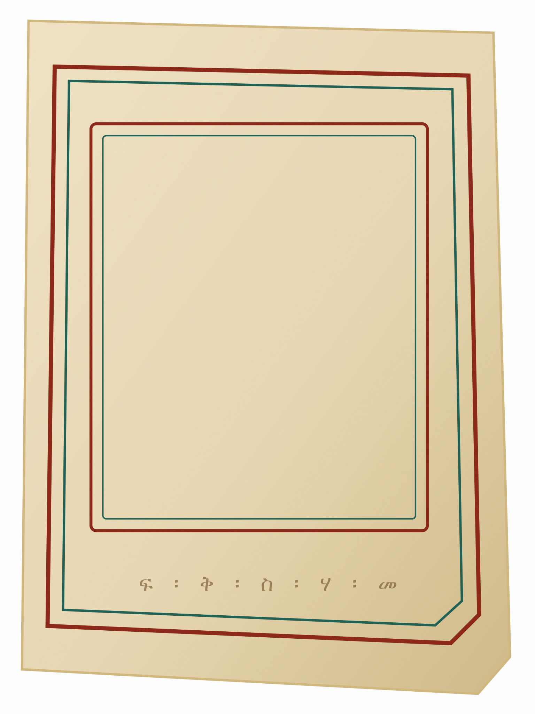
Light parchment for scripture cards, inserts, and codex reveals.

Dark field for map cards, thesis cards, and episode openers.
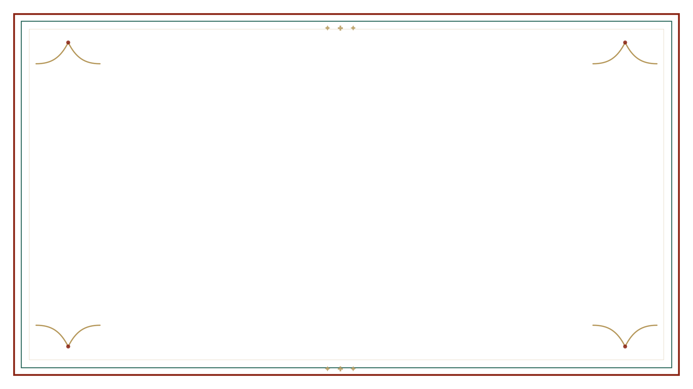
Ceremonial widescreen frame with Ethiopian-inflected corner logic.
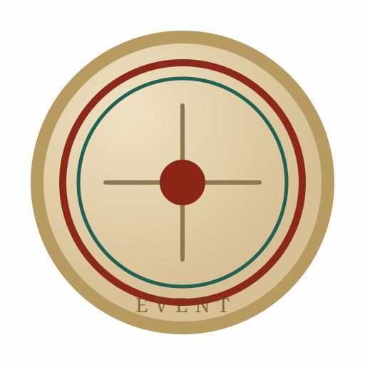
Core chronology language: medallions plus a lit ceremonial spine.
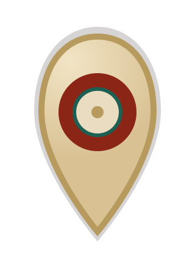
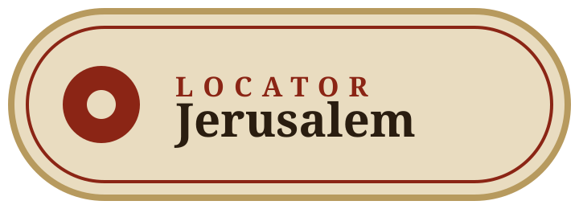
Destination emphasis plus calm locator labeling for geography sequences.


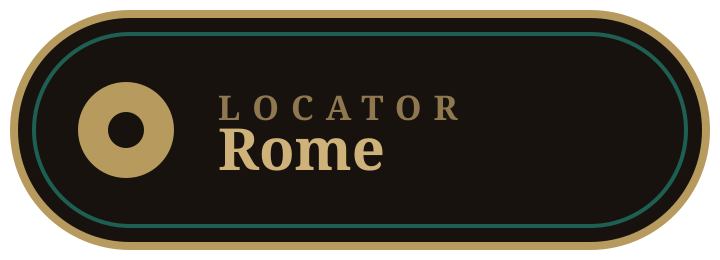
Lower thirds and source witness tags for scholars, councils, and locations.

Use for thesis lines, witness quotations, or claims that need ceremonial emphasis.


Image-plus-text hybrid cards and archival citation surfaces.

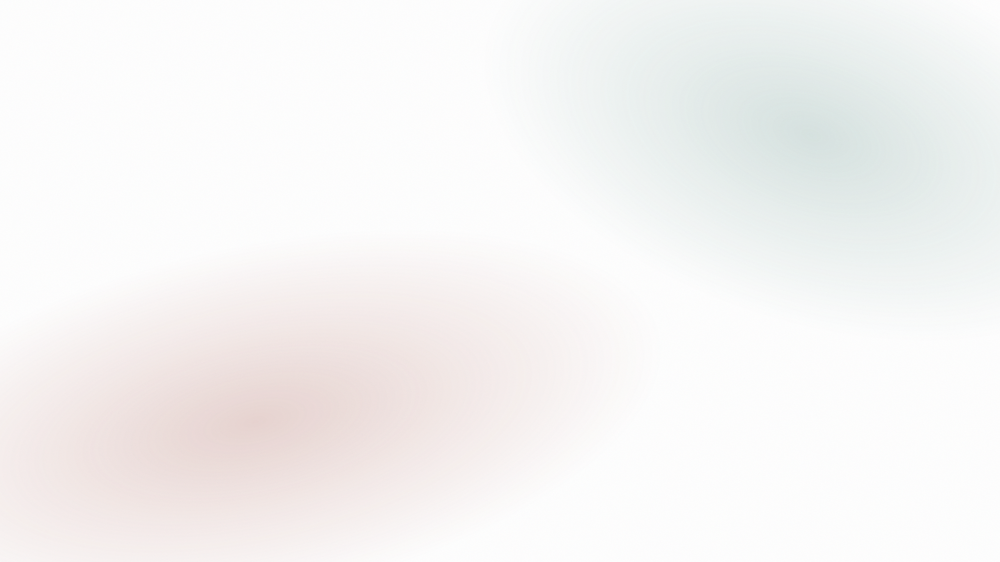
Tactile mood layers for source reveals, title cards, and archival atmosphere.
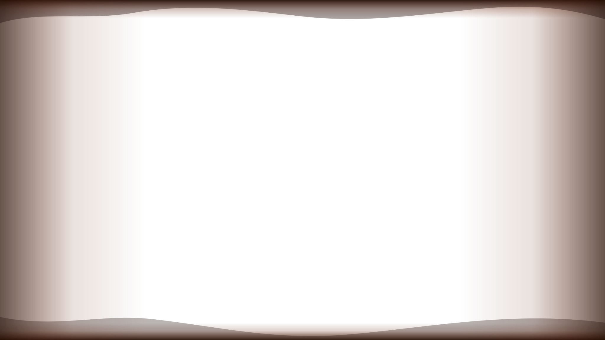
Use this when history should feel scorched, ruptured, or materially damaged.
This is the baseline transition mood for documentary ruptures and ceremonial reveals.
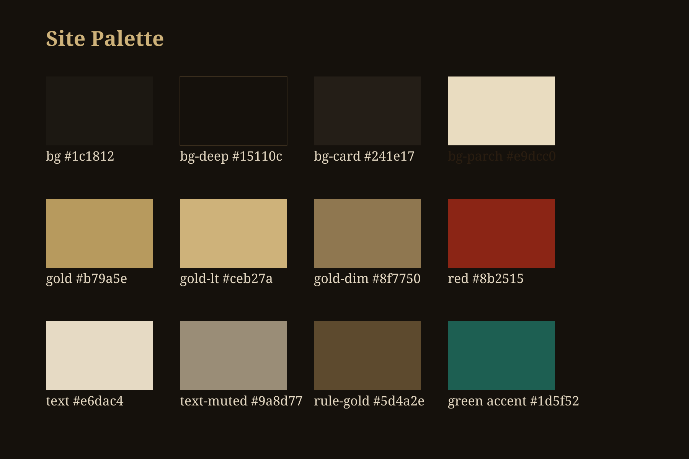


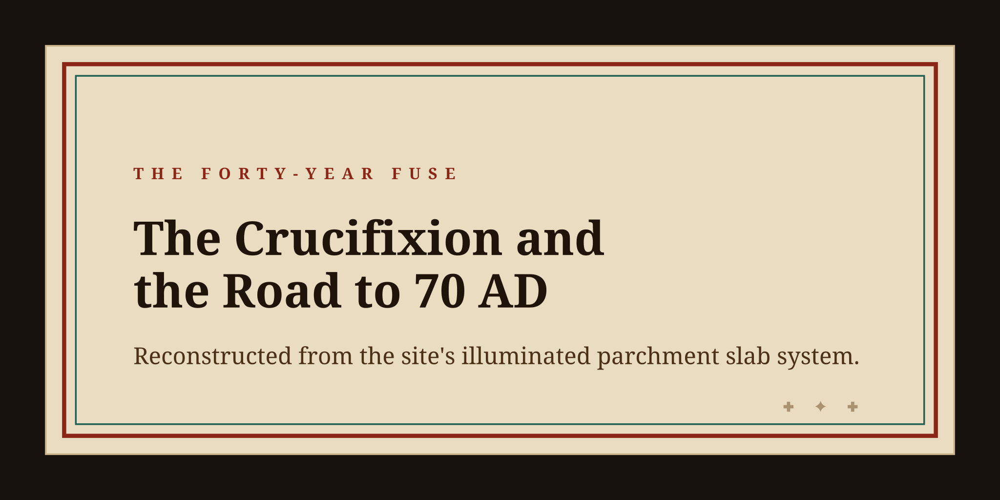
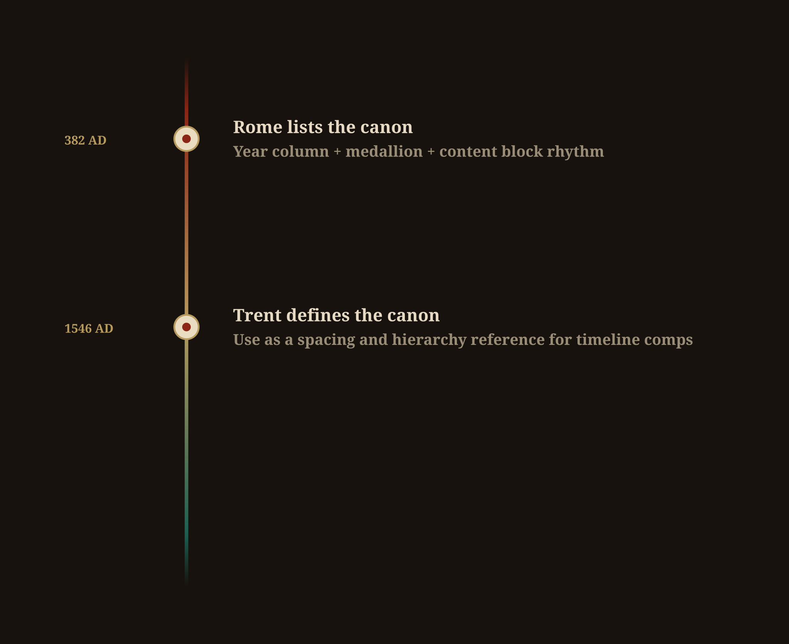
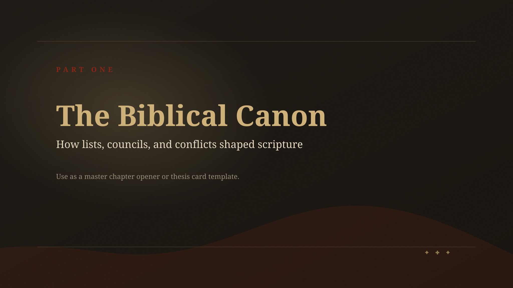
Dark archival background plus red/gold chapter card.
Light parchment bed plus illuminated border for witness or scripture cards.